Welcome back to more
arrays! In this lesson, you'll examine a potpourii
of different array topics and applications.
Welcome back to more
arrays! In this lesson, you'll examine a potpourii
of different array topics and applications.
You'll learn:
- How to process the array of command-line arguments that are passed to every application.
- How to use arrays to write methods that take a variable number of arguments.
- How to create and process multi-dimensional arrays.
- How to use Java's
GridLayoutlayout manager to arrange your components in a pattern of rows and columns.
Along with each of these topics, there's also a short, (or not-so-short), exercise to give you a little more practice with the topic. And, at the end of the lesson, you'll have a chance to put it all together building a game of Tic Tac Toe.
Command-line Arguments
One of the most common uses of String arrays
is when you create an application and you need to pass information
into that application when you run it. With an applet, this
is done through the HTML PARAM tag and the getParameter()
method.
With applications, both GUI and console-mode, arguments are passed to your program via the command line, similar to those you supply when you use javac to compile your Java code from the terminal window.
When you manually compile your code, you type in the word javac, and then follow that with the name of the program you want to compile, like this:
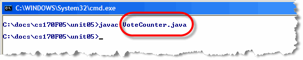
The program file name you supply, VoteCounter.java in the screenshot shown here, is an example of a command line argument.Processing the Command Line
As you'll recall, when a Java application begins, it starts with the
main() method. The main() method is passed
a single argument from the operating system, an array of
String, traditionally called args.
(Of course, you can name it anything you like.)
Inside your main() method, you can check the field
args.length to see how many arguments were passed.
If no arguments were passed to your application, then
args.length will be 0.
Since args.length tells you how many arguments there are, the
situation practically begs for a for loop,
right? Here's an simple console mode application that you can use to
see how this works.
// Args.java
public class Args
{
public static void main(String[] args)
{
for (int i = 0; i < args.length; i++)
System.out.println(args[i]);
}
}
Since Args is a console mode application, it doesn't need to
extend anything, it just needs to have a main()
method. Inside the main() method, the program simply loops
through the array (args) and prints each command
line argument to the console.
Here's what the program looks like as it runs:
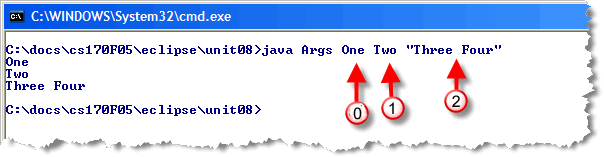
As you can see, Java separates each word into a separate element of theargs array: the first word becomes element 0, the second
becomes element 1, and so on. When you enclose several words in quotes,
like "Three Four" in the example, the entire phrase is treated as a single
element of the array.
Remember: command-line arguments are passed as
Strings, just like HTML PARAM tags. That means that
if you want to process numbers, you'll need to convert
the numbers, using a method like Integer.parseInt().
Averaging Numbers
As discussed in Section 7.4 of the text book,
when you run a Java program named Foo,
(for instance), anything typed on the command line
after "java Foo" is passed to the main()
method in the args parameter as an array of strings.
- Write a program Average.java that just prints the strings that it is given at the command line, one per line. If nothing is given at the command line, print "No arguments".
- Modify your program so that it assumes the arguments given at the command line are integers. If there are no arguments, print a message. If there is at least one argument, compute and print the average of the arguments. Note that you will need to use the parseInt() method of the Integer class to extract integer values from the strings that are passed in. If any non-integer values are passed in, your program will produce an error, which is unavoidable at this point.
- Test your program thoroughly using different numbers of command line arguments.
Variable-Length Parameter Lists
Variable-length parameter lists are a new feature in Java 5 that allows you to create methods that take, as the name suggests, a variable number of parameters. Suppose, for instance, that you wrote a method that returned the maxium of two doubles, like this:
public double max(double a, double b)
{
return a < b ? b : a;
}
This is fine for two numbers, but when you need to find the maximum of three numbers, or four, you'll need to write overloaded methods for each of those cases, like this:
public double max(double a, double b) { ... }
public double max(double a, double b, double c) { ... }
public double max(double a, double b, double c, double d) { ... }
Of course, the code in each method is going to be different, to handle the differing number of arguments. Variable-length parameter-lists allow you to write a single method that can be used in all of those cases. Here's how it works.
Parameter Definition
A variable-length formal parameter is really a way of defining a special kind of array parameter. When defining the formal parameter, use an ellipsis (three dots) instead of the square brackets you'd use for a normal array declaration.
Here's an example using the max() method:
public double max(double ... nums) { ... }
Inside the max() method, you treat nums
as a regular array of double. That means that you can use the
standard array-processing algorithm for finding the largest
value, and then return that, as shown here.
public double max(double ... nums)
{
double largest = nums[0];
for (double n : nums)
if (n > largest)
largest = n;
return largest;
}
Using the Method
The big difference between a variable-length parameter method, and one that takes a regular array as a formal parameter, is that, for the variable-length variety, Java will create the array for you; with the "regular" version, its up to the caller to create the array before calling the method.
Here's an example:
int d1 = max(10, 20); // 2 arguments
int d2 = max(10, 20, 30, 50, 70); // 5 arguments
As your book points out on page 395, constructors can also be written to accept variable numbers of parameters. You can combine a variable-length parameter with regular parameters, but the variable-length parameter must come last. You can't have more than one variable-length parameter per method.
Exploring Parameter Lists
The program Parameters.java (below) contains code to test the method average() from Section 7.5 of the text. Note that average must be a static method since it is called from the static method main().
Complete the following steps to learn more about variable-length parameter lists.
- Compile and run the program. You must use the -source 1.5 option in your compile command. or make sure that Eclipse has the target JVM set to 1.5 if using that platform.
- Add a call to find the average of a single integer, say 13. Print the result of the call.
- Add a call with an empty parameter list and print the result. Is the behavior what you expected?
- Add an interactive part to the program. Ask the user to enter a sequence of at most 20 nonnegative integers. Your program should have a loop that reads the integers into an array and stops when a negative is entered (the negative number should not be stored). Invoke the average() method to find the average of the integers in the array (send the array as the parameter). Does this work?
- Add a method named minimum() that takes a variable number of integer parameters and returns the minimum of the parameters. Invoke your method on each of the parameter lists used for the average function.
// Parameters.java
//
// Illustrates the concept of a variable parameter list.
//********************************************************
import java.util.Scanner;
public class Parameters
{
//-----------------------------------------------
// Calls the average and minimum methods with
// different numbers of parameters.
//-----------------------------------------------
public static void main(String[] args)
{
double mean1, mean2;
mean1 = average(42, 69, 37);
mean2 = average(35, 43, 93, 23, 40, 21, 75);
System.out.println ("mean1 = " + mean1);
System.out.println ("mean2 = " + mean2);
}
//----------------------------------------------
// Returns the average of its parameters.
//----------------------------------------------
public static double average (int ... list)
{
double result = 0.0;
if (list.length != 0)
{
int sum = 0;
for (int num: list)
sum += num;
result = (double)sum / list.length;
}
return result;
}
}
Parallel Arrays
Sometimes, you'll want to make use of two or more arrays that contain related information, and that are processed as a single unit. Such interdependent arrays are called parallel arrays.
The Graphics class method, drawPolyLine()
uses interdependent parallel arrays to specify the points connecting
a line to be drawn on the display. The drawPolyline()
method is useful when you want to draw a sequence of connected
line segments.
With the regular drawLine() method, you
specify the endpoints of each line; with drawPolyline(),
you supply two arrays, representing the x and y coordinates
for each point in the line, along with the number of lines.
Here's the method's signature:
drawPolyline(int[] ax, int[] ay, int n);
The PolyDraw Applet
Here's a short applet that illustrates the use of parallel
arrays, and the polyDraw() method. It also
shows you how to use Java's other mouse-event
interface, MouseListener.
Here's how the program works:
- Instead of using a separate "listener class", like
the applets you've seen up to this point, the
PolyDrawapplet handles mouse events itself, by addingimplements MouseListenerto its header. TheMouseListenermethods will allow us to respond to mouse clicks: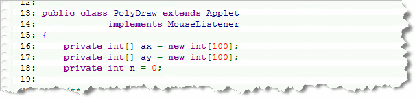
The applet has three instance variables: the parallel arraysaxanday, and theintvariablen. We'll usento keep track of how many times the applet has been clicked. - Inside the
init()method, we need to "active" the event handling by calling theaddMouseListener()method: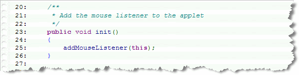
Note that the argument passed to the method wasthis, signifying that the implemented interface methods will be found in the PolyDraw applet class itself. -
The
MouseListenerinterface defines five methods, instead of the two methods specified in theMouseMotionListenerinterface. We're really only interested in one of those methods,mouseClicked(), shown here: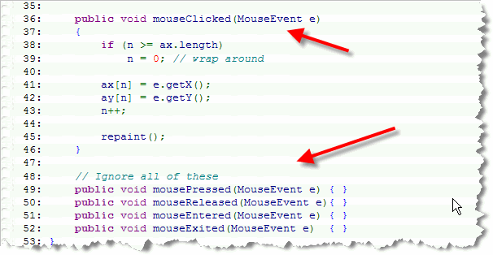
Whenever the mouse is clicked, the current mouse coordinates are retrieved using the methodsgetX()andgetY(), and are stored in their respective arrays. Then, the "mouse-click-count" variable,nis updated to reflect the addition of the new point, and the applet is asked to repaint itself.Note that even though we dont' care about the other four methods in the interface, we still need to include "dummy" methods to satisfy the interface requirements.
-
Finally, inside the
paint()method, a single call todrawPolyLine()draws all of the line segments contained int the two arrays: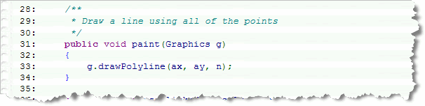
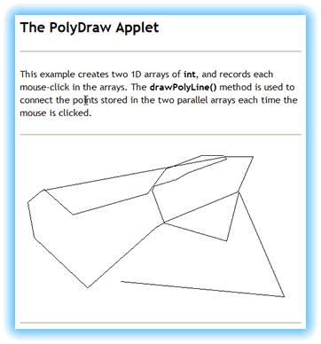
When you calldrawPolyLine(), Java marches through
the array, using the argument n as the for loop bound,
and extracts the corresponding value from each of the arrays
during each repetition. You are responsible for making sure that
both the ax and ay arrays each
have n number of elements.
You can download and read through all of the code in PolyDraw.java by clicking the link in this sentence. You can also click your way around it's surface to see what you can create.
If you don't want to download the program, the screenshot to the right shows you what the program looks like as it runs, and gives you a hint about my great artistic talent.
Polygon Drawing
You've already seen the drawPolyline() method, which draws
a series of connected line segments. The Graphics class
polygon drawing methods work almost identically except that the
polygon methods assume you are drawing a closed figure,
so the first and last point in the series are automatically
connected if required.
The two polygon drawing methods are:
drawPolygon(int[] ax, int[] ay, int n);
fillPolygon(int[] ax, int[] ay, int n);
The fillPolygon() method uses the "odd-even" fill rule
to fill the different parts of the polygon when two lines overlap. Both
methods ignore any call where n is less than three.
2D Arrays
When you declare an array,
the elements can be of any type. You can create an array of
Button references like this:
Button[] buttons = new Button[5];
and, you can create an array int variables like this:
int[] pieces = new int[10];
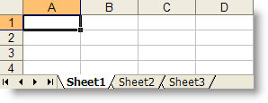
The variablesbuttons and pieces are
both array variables that refer to a collection of
Button references or to a collection of
int values.
Java also allows you to create array variables that refer, not
to Button objects or int values, but
to other arrays. These are called multidimensional
arrays. Since we'll only be working with two dimensions in
this class, I'll refer to these as 2D arrays, although
you can have as many dimensions as you like.
The easiest way to think of a 2D array is to think of rows and columns. A grid or a spreadsheet is a useful mental model. In reality, though, a 2D array is composed of arrays of arrays. You'll see what that really looks like shortly.
To create a 2D array, just extend the syntax you've already learned for 1D arrays. For instance, in the example shown here:
int[] d1 = new int[5];
the variable d1 is an int[]
(int array) that refers to 5 int
values.
Since that's true, perhaps you can figure out what the code shown here means:
int[][] grid;
The variable grid is an array variable,
just the like the variable d1 in the earlier
example. But, each of the elements contained in the
grid array is not an int, but an
int[]— that is, an int array variable.
Allocating Memory
Of course, just like with 1D arrays, an array variable doesn't
actually "point to" anything, until you allocate some memory
by using new and an array constructor. The
syntax for doing this with a 2D array is very similar to that
used for a single-dimension array:
int[][] grid = new int[2][4];
This piece of code creates a variable (grid), that
refers to a two-element array. Each element in that two-element
array (grid[0] and grid[1]) is
an int[], that is, an int array
variable, as shown here:

grid[0] and grid[1]
refer to separate four-element int arrays.
The illustration should help you to visualize
the relationships between the various pieces.
Using 2-D Elements
Rather than thinking of 2-D arrays as shown in the previous illustration, (even though that is how the arrays are actually implemented in memory), it is usually easier to think of them as an actual grid composed of rows and columns, labeled starting at 0, like this:

To access an individual element, instead of providing one subscript enclosed in brackets, you supply two subscripts, each enclosed in its own set of brackets. (You cannot put both subscripts in the same set of brackets, as you can do in Pascal).
- The first subscript represents the row in the array.
- The second subscript represents the column of the element you want.
Remember that both subscripts are zero based.
C/C++ Note : In Java, subscripts do
not "wrap around" as they do in some other languages such
as C. You cannot access scores[1][0] by using the
notation scores[0][3]. That's because, in reality,
you are accessing an individual array variable, as shown in the
earlier illustration.
Initializing 2D Arrays
You can initialize 2D arrays by using loops and storing values
in each element, just as you can with a one-dimensional array.
Of course, when accessing 2D arrays, you'll usually use a
pair of nested for loops with indexes for
the row and column.
Just as with 1D arrays, you can create and initialize a 2D array in one statement by providing a list of initial values in an initializer list. When you do this, you supply a separate initializer list for each of the subarrays. Each of these subarray initializers is enclosed in its own set of braces, and separated from the others by commas.
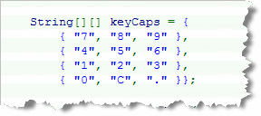
Here's an example that creates a 4 x 3 array ofString
that imitates the layout of a standard numeric keypad.
When you use automatic initialization like this, you must
remember to match the number of brackets and initializers.
If you have only a single bracket after String[]
your program won't compile.
Processing 2D Arrays
As I previously mentioned, you'll normally process a 2D array by
using a pair of nested for loops with
indices for the rows and columns. This is pretty straightforward.
Here's some code that processes the array keyCaps,
from the last section, to create a set of Button:
for (int row = 0; row < 4; row++)
for (int col = 0; col < 3; col++)
add(new Button(keyCaps[row][col]));
Of course, if you want to avoid hard-coding the sizes of the
rows and columns, Java allows you to make a perfectly generic
traveral loop by using each "sub-array"'s length
field like this (assuming an array named a):
for (int r = 0; r < a.length; r++)
for (int c = 0; c < a[r].length; c++)
// Process a[r][c] here
Notice that each row in a 2D array can be treated as a
1D array in its own right. Thus for the inner loop in this
example, (when processing the columns), we could test against
a[r].length, because each subarray has its own
length field.
Here is the source code for an applet NumPad.java which uses this code to create a simple numeric keypad. You can run the applet by clicking the link in this sentence, or, you can just take my word for it, and look at the nice picture shown here:

2D Arrays and Methods
The way that Java 2D arrays are implemented makes it very easy to write methods which take 2D arrays as arguments. You just have to remember to declare the formal arguments using two brackets instead of one.
Here's an example of a method that takes a 2D array of
double and returns the sum of all the numbers.
//The sum2D() Method
double sum2D(double[][] ar)
{
double sum = 0.0;
for (int r=0; r < ar.length; r++)
for (int c=0; c < ar[r].length; c++)
sum += ar[r][c];
return sum;
}
Returning 2D Arrays
Just as with 1D arrays, you can return 2D arrays from your methods. If, for instance, you're certain that every row in your 2D array has the same number of elements, you could return a 2D array containing the sum of each row and column like this:
//The sum2DAR() Method
double[][] sum2DAR(double[][] ar)
{
double[][] ans;
ans[0] = new double[ar.length]; // rows
ans[1] = new double[ar[0].length];
for (int r=0; r < ar.length; r++)
{
for (int c=0; c < ar[r].length; c++)
{
ans[0][r] += ar[r][c]; // Add each row total;
ans[1][c] += ar[r][c]; // Sum of each column
}
}
return ans;
// ans[0] contains sum of each row
// ans[1] contains sum of each col
}
Ragged Arrays
The array returned from sum2DAR() is called a
ragged array, because the two 1D arrays
ans[0] and ans[1] normally will
have different lengths. If you pass a 2D array that has
20 columns and only 5 rows, then the returned array will
have 5 elements in the the first array ans[0]
and 20 elements in the second array ans[1].
To create a ragged array, you have to allocate space for
each row of the 2D array independently, as is done inside
sum2DAR() with this code:
double[][] ans;
ans[0] = new double[ar.length];
ans[1] = new double[ar[0].length];
The GridLayout Class
The last layout manager that we'll
look at is GridLayout.The
GridLayout layout manager allows you to create
applets that use equal-sized rows and columns, such as a
spreadsheet or a numeric keypad. Because of that,
the GridLayout works especially well with
two-dimensional arrays.
When you use a GridLayout, each component "swells"
up to fill the cell that it is located in. This is similar to
the behavior you saw with the BorderLayout layout
manager, but slightly different. GridLayout works
a little like putting a component in the "Center" position with
BorderLayout. The GridLayout layout
manager ignores all component's preferred size entirely, and
divides its space on a purely egalitarian basis.
Adding Elements to the Layout
When you add elements to your GridLayout, you
don't get to choose where they go. Instead, they are added
in the same order that components are added to a FlowLayout
layout manager: the first component is placed in the
upper left corner, the next in the cell to its right. When all
the cells have been filled on the first row, then the first cell
in the second row is filled.
That's not the whole story, however! Suppose you have a
GridLayout that contains "slots" for 12
components, arranges as 3 rows and 4 columns. What happens
when:
- you have more than 12 items (say 13)?
- you have fewer than 12 items (say 7)?
You might be surprised at the answer. To find out how
it works we need to look at GridLayout's
constructors.
Creating a GridLayout
When you create a GridLayout, you control four
different attributes of the layout:
- The number of columns
- The number of rows
- The vertical space between rows (vgap)
- The horizontal space between columns (hgap)
There are three GridLayout constructors.
Here's are the signatures of each:
GridLayout(); // Same as GridLayout(1, 0)
GridLayout(int rows, int columns);
GridLayout(int rows, int columns, int hGap, int vGap);
The Default Constructor
The no-argument (default) constructor creates a
layout that contains 1 row and 0 columns. When used to specify
rows and columns, GridLayout uses 0 to mean
"any-number-of." The first constructor thus creates a layout
that can accept any number of components, but all of them
will appear on the same row.
Here's an example,
GL1.java, that adds 5 Buttons to an
applet controlled by a default GridLayout:
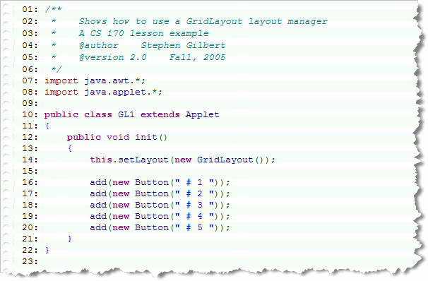
You can run the applet in a new browser window by clicking the link in this sentence. If you don't want to run the applet, you can see what it looks like here: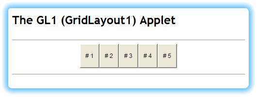
Row-Column Constructor
The second GridLayout constructor is the one
that is most confusing. On the first reading, the constructor
allows you to specify the number of rows and columns. Here's
an example that specifies 3 rows and 4 columns:
this.setLayout(new GridLayout(3, 4));
Unfortunately, that's not what this does at all. This constructor allows you to specify either the rows or the columns, but not both. To specify the number of rows, use 0 for the columns. To specify the number of columns, specify 0 for the rows. If you specify both, like the example shown, the number of columns is ignored. It's exactly if you had written:
this.setLayout(new GridLayout(3, 0));
Sun JavaDoc Reminder
"When both the number of rows and the number of columns have
been set to non-zero values, either by a constructor or by the
setRows and setColumns methods, the number of columns specified
is ignored. Instead, the number of columns is determined from
the specified number or rows and the total number of components
in the layout. So, for example, if three rows and two columns
have been specified and nine components are added to the layout,
they will be displayed as three rows of three columns.
Specifying the number of columns affects the layout only when
the number of rows is set to zero."
Here's an applet,
GL2.java, that shows what this looks like when
you add 7 Buttons to this GridLayout
manager. Remember that since we've specified both
rows and columns, the columns is irelevant.
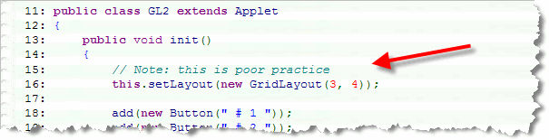
The program first computes how many columns are needed: 7 components divided by 3 rows results in 2 columns with 1 component left over; since we need a column to store the left over component, that means we'll need 3 columns. Once the number of columns is calculated, the manager starts filling in the components, left to right, likeFlowLayout.
You can run the applet in a new browser window by clicking the link in this sentence. If you don't want to run the applet, you can see what it looks like here:
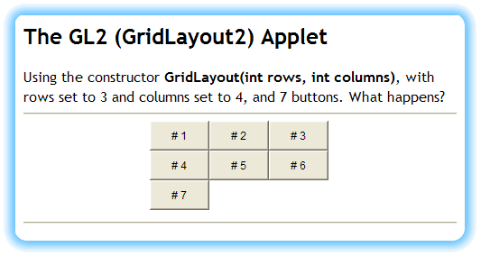
The hGap/vGap Constructor
The final constructor, which takes four arguments, allows you to specify the vertical space that appears between adjacent rows and the horizontal space that appears between adjacent columns. The constructor used here:
this.setLayout(new GridLayout(4, 3, 10, 2);
leaves a 10-pixel space between columns, and a 2-pixel space separating the rows. You can see how that looks in the applet GL3.java, which is just like GL2.java except for the constructor used.
You can run the applet in a new browser window by clicking the link in this sentence. If you don't want to run the applet, you can see what it looks like here:
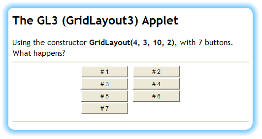
TicTacToe—Working With 2D Arrays
The Sun Java Development Kit (JDK) comes with a sample program that plays TicTacToe. The JDK program includes sounds and comes with cool graphics. It can be a little slow, however, and the code is not the easiest to understand.
In this exercise, you'll build your own version of TicTacToe using Labels, GridLayout, and a couple of arrays. In this simpler version of the game, instead of playing against the computer, you'll play "both sides of the table".
Before you get started, however, why don't you take a minute to play a game?
Introduction
To complete the exercise you'll have to understand how to:
- Declare a two-dimensional array of primitive values
- Declare a two-dimensional array of object references
- Initialize each of the elements in a two-dimensional array of object references
- Use a pair of nested
forloops to process the elements in a two-dimensional array
Much of the TicTacToe program is already written for you. Download the starter file, TicTacToe.java, and then follow the steps outlined below and in the comments.
Step 1: Instance Varaiables
Define your applet's attributes. The TicTacToe program has three different kinds of instance variables (fields) that you must define before you can compile the program successfully. Make sure you define your fields and are able to compile without warnings or errors, before you attempt to go further.
Here are the three kinds of fields:
-
Program Arrays
The TicTacToe program has two "parallel", 3 x 3, two dimensional arrays. Start your programming by defining these two arrays:- The first of these is an array of
Labelobjects. This array, (which I've named grid in my comments) is used to display the actual Xs and Os on your screen. EachLabelwill display an X, and O, or a blank. - The second array is an array of
charprimitives. This array, (which I've named game in my comments), is used to simplify keeping score as the game is played. Each element in game contains a space ' ' if the position has yet to be played, an 'X', if the position contains an X, and an 'O' if the position contains an O.
- The first of these is an array of
-
GUI Fields
In addition to theLabelsthat make up the array the TicTacToe applet contains the following GUI elements. Define these elements after you've finished defining your arrays:- A
Buttonobject (named restart in my comments). The user can restart the game this. - A
Panelused to it will hold theLabelsin grid - A
Label(named status in my comments). This will keep the user informed of the game's progress. You might want to initialize status to a helpful welcome message.
- A
-
Primitive Fields
Your program will also need the following primitive fields which you'll use as you play the game:- An
int(which I've named numClicks in my comments) that will keep track of how many X's and O's are displayed. (This will be used to determine tie games). - A
boolean(that I've named isDone in my comments) which is used to determine when the game is finished. Initialize isDone tofalse. - A
boolean(which I've named isXTurn in my comments) which is used to determine whose turn it is to click. Initialize isXTurn totrueif you want to assume that X always goes first, or, you can useMath.random()to initialize it totrueorfalseusing the expressionMath.random() > .5.
- An
Once you've defined these fields, make sure your program compiles without error. If it does not, then you've made a mistake defining the fields; go back and double-check your work until the compiler quits complaining.
Step 2: The init() Method
Write the init() method. There are four tasks to complete in this step. You may want to compile after each task, just to make sure you're on the right track. After you've finished writing the init() method, compile one last time before going on. When you finish this step, you should be able to run your applet and see that its appearance is satisfactory.
-
Set the Layout
Your applet will useBorderLayoutfor the applet itself, even though thePanelthat contains the game's labels will useGridLayout. UsesetLayout()to initialize your applet's layout. -
Add the Status Label
Add the Label (status) to the top of your applet. When you do so, also change the Label's background to yellow, the foreground to blue, and the font to a nice 12-pt bold. -
Initialize the Main Panel
You want to display theLabelobjects in the array using a 3 x 3 grid on the screen. Fortunately, Java'sGridLayoutis just what you need. Before you add theLabelobjects to yourPanel, however, there are a few things you need to do to prepare your mainPanel.- Use the
setLayout()method to change thePanelobject so that it uses aGridLayout. Leave three pixels between cells in the grid. - Change the font used by the
Panelto a 32 point, bold sans serif font. This will give you large Xs and Os. - Change the
Panel's background color to black. This adds the lines betweenLabels. - Add the
Panelto the center of your applet.
- Use the
-
Initialize the Grid
In Step 1, you created a 3 x 3 array ofLabelreferences (which I namedgrid). Each of the elements ingrid, however, is not yet aLabel; insteadgridis populated with 9nullLabelreferences.To fix that, you need to use a pair of nested
forloops to create 9Labelobjects and place them into your array. Inside the inner loop:- Create a
Labelobject and place it in the corresponding element in the array. - Attach a
MouseListenerto theLabelobject usingaddMouseListener(this). Note that this is different than usingMouseMotionListener. - Set the background of the
Labelto white - Add the
Labelto thePanel. - While still in the inner loop, place a space in the
current element of the
chararray (which I've namedgame). Because bothgridandgamehave the same number of dimensions, you can use the[row][col]indexes ongameas well asgrid.
- Create a
At this point, your init() method is finished.
Compile your program, clean up the syntax errors, and then take
it for a ride. Nothing should happen when you click on any of the
Labels, but the basic structure and layout of the
applet should look correct.
Step 3—MouseClicked
Handle the mouse clicks. Because the TicTacToe
applet uses the MouseListener interface, the code to handle
mouse clicks is placed in a method named mouseClicked().
You could have placed the code in the methods mousePressed()
or mouseReleased() as well.
This is a fairly complex method. You will have to retrieve a reference to
the Label that was clicked, and then write a pair of nested for loops
to find its position in the array. This is almos exactly the same as
the code used to determined which button was clicked in the
ToolBar applet that started off the Object Arrays
lesson.
Once you've determined which Label was clicked, you'll
write the code to display the X or the O. To do that, locate the
comment labeled "c" and complete these four tasks ("d" through "g"):
-
Handle Invalid Moves
For a move to be valid, theLabelmust be blank. You can check if theLabelis blank by using thegetText()method to retrieve theLabel's text, and then using theequals()method to see if it contains a single space. (Alternatively, you can check to see if the elementgame[row][col]is a single space.)If the
Labelis not blank then print an error message telling the user that the move is illegal. Use the statusLabelto display the message.Since you are inside the inner loop when this occurs, you'll need to break all the way out. You can use a labelled break if you like, a
booleanflag, or just areturn. -
Handle 'X' Moves
In the previous task, you checked to see if the clickedLabelwas blank; if it was not blank, you printed an error message and left the loop. If theLabelwas blank, check to see if it is the 'X' player's turn. (Do that by testing the value of thebooleaninstance variable that I namedisXTurn). If it is the 'X' player's turn then:- Set the text in the
Labelto "X". - Set the foreground color of the
Labelto red. - Set the element
game[row][col]to 'X'.
- Set the text in the
-
Handle 'O' Moves
In the previous task, you checked to see if it was the 'X' player's turn. You don't have to check if it's the 'O' player's turn; you already checked for 'X' in the last task, so you can place this code inside anelsestatement. Inside theelseblock:- Set the text in the
Labelto "O". - Set the foreground color of the
Labelto blue. - Set the element
game[row][col]to 'O'.
- Set the text in the
-
Finish Up
After drawing the 'X' or the 'O', you need to do a little bit of housekeeping. This part is really simple.- If
isXTurnistrue, then change it tofalse; if it is alreadyfalse, change it totrue. You can do this easily by using the logical NOT operator (!). - Increment the number of clicks. This is stored in the
field
numClicks.
- If
At this point, you're all finished except for checking to see if the game is over and resetting the game after the game is finished. You'll handle those in the next two steps. Before you go on, however, make sure your program compiles and that it works OK. It's easier to fix problems at this stage than after you've written the code for the next step.
Step 4—Resetting the Game
Write the resetGame() method. This method is called to "clear out" all of the Labels whenever a game is finished, or when the user presses the "Reset" button.
Write a nested for loop. Inside the loop:
- For each element in the
Labelarray set the text to a single blank space. (Make sure you don't set it to more than one space or to the emptyStringaccidentally.) - Set each element in the
chararray to a single space as well. Here you'll have to use acharliteral, while in the previous step you need to use a space contained inside aString.
At the end of the method, set the field named numClicks
to zero, and the field named isXTurn to true.
Step 5—Game Over
Write the gameOver() method. To see
if anyone has won the game. You'll
need to process both diagonals, and then check to see if any of the
rows or columns "line up". To facilitate this, I use a local
char variable, named winner, which I've already
initialized to a single space for you.
Here's how to check for the winner:
-
First Diagonal
Check to see if all three characters in the first diagonal, (upper-left, middle, lower-right), are the same, (but not the space character). If they are, then set winner to the character in the upper-left corner. -
Second Diagonal
If no winner was found in step 1, then do the same thing for the second diagonal, (upper-right, middle, lower-left). If they match and none are a space, then the winner is the lower-left. -
Rows and Columns
If you don't have a winner on the diagonals, then you need to start looking through the rows and columns. Use a loop to check each row, examining all three columns. If all three match, (and are not the space), then the winner isgame[i][0]. If you don't get a hit there, then do the same thing with a loop for the columns, checking each row. -
Tie Game
If the number of "successful" clicks is 9, and the winner variable is still a space, then you have a tie.
After you've checked each possiblity, see if the game is over. If you have a winner or a tie, then print the status message. If you don't, then print a status message telling the user whose turn it is next.
Coming Up Next ...
That's it for arrays! Now let's turn our attention to some entirely different topics. For the next lessons, we'll look at the subjects of inheritance, interfaces, and exceptions.